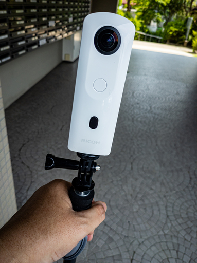

今年の 8 月に上高地に行く予定にしいる。気分はすでに上高地に飛んでおり、ここのところ flickr で上高地の写真を見るのが日課になっている。
いつもの日課で flickr をうろついていたら下の RICOH THETA Z1 で撮られた 360° フォトがあった。
flickr 上でグリグリと動かせて非常に楽しく、時間を忘れてグリグリ回して上高地の 360° 写真を見ていたら自分も RICOH THETA が欲しくなってしまい、いても立ってもいられなくなってしまった。
現在障害者年金しか収入がないので、支払い方法に悩みながらもダメ元で JACCS の 10 回払ができるか試したところ、幸運にも無事審査が通った。ありがとう JACCS さん。そして審査が通った翌日に map camera から RICOH THETA SC2 が手元にやってきた。
Z1 じゃなく SC2 なのは自分の現在の支払い能力と将来の HD PENTAX-DA 15mmF4ED AL Limited 購入を見据えてのことだ。
SC2 は Z1 と比べると解像しないとかパープルフリンジが盛大にでるとか、そういった欠点があることはわかっていた。でも思い出を記録するという目的であれば悪くない選択肢だと思えた。
そんなわけで我が家に RICOH THETA SC2 がやってきた。
届けば当然撮りたくなるわけで、早速炎天下近くの公園に行ってみた。
これだけみるとどんだけ山深い場所なのかと思うけど、そんなに山奥ではなかったりする。 #theta360 - Spherical Image - RICOH THETA
こちらも同じ公園。
水辺でも暑いものは暑い #theta360 - Spherical Image - RICOH THETA
上高地に持っていくのが楽しみだ。
RICOH THETA SC2 を買ったわけだが、そうすると俄然白馬岳周辺の 360°フォトが見たくなった。だけど探しても一向に見つからない。
小 1 時間ばかり探していて、ふと気がついた。
Google ってたしか人に 360° カメラを担がせて山に登らせたりしてたよなぁ、と。
早速白馬岳で検索。
あった！！しかも白馬山荘にピンポイント！！
ちょー懐かしい。泣きそうになった、ってことはないけど、小屋の周囲の細かいところまで思い出せた。でも流石に小屋と石垣の隙間には入れんよね。
また白馬山荘に生きたいなぁ。